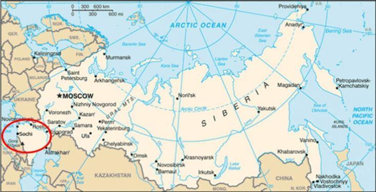
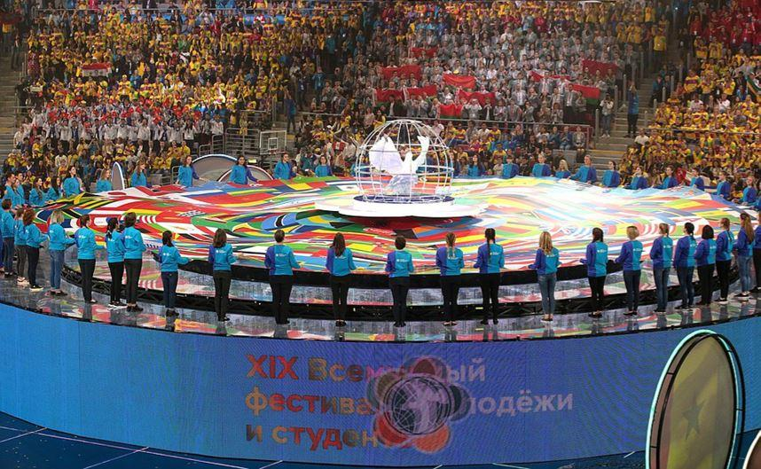
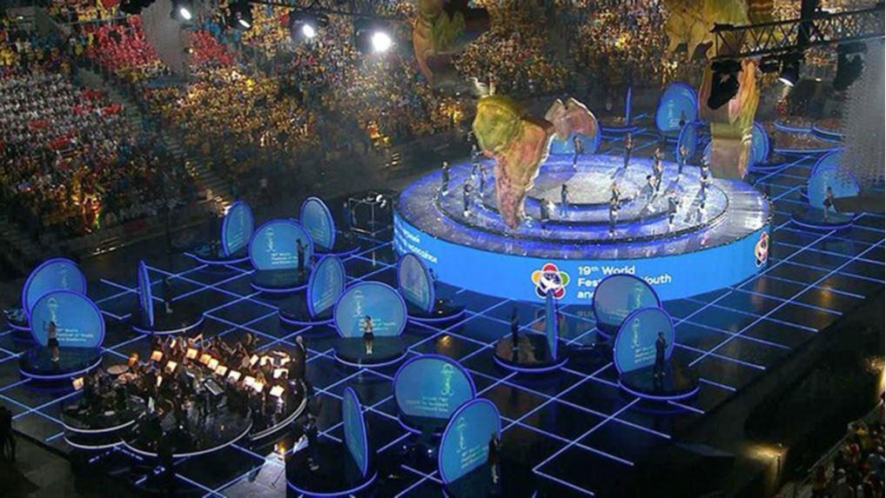
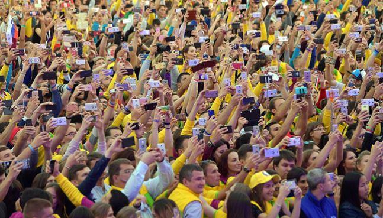
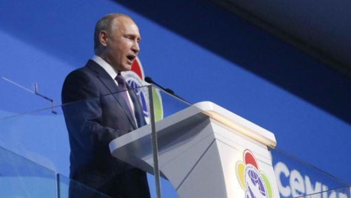
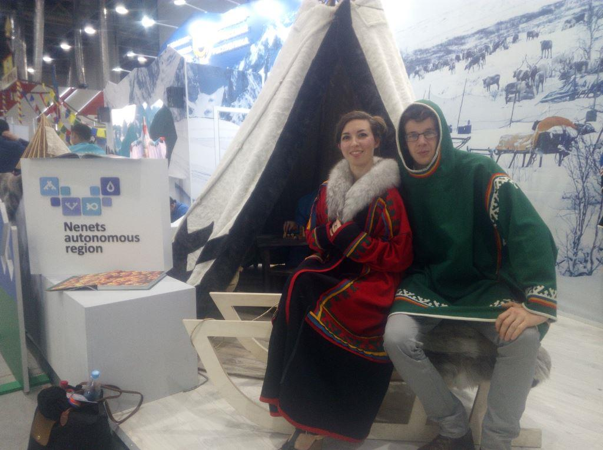
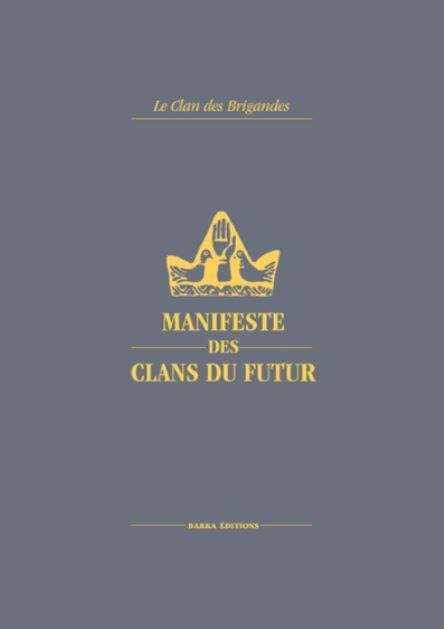

Pour terminer leur voyage en Russie, Antoine et Roxane se sont rendus à Sotchi le 14 octobre pour participer au XIXe Festival Mondial de la Jeunesse et des Étudiants, qui se terminait le 22 octobre 2017.

Sotchi, à quelques kilomètres au nord de la frontière géorgienne
Le Festival Mondial de la Jeunesse et des Étudiants est un événement organisé environ tous les 4 ans dans un pays différent par la Fédération Mondiale de la Jeunesse Démocratique. Le dernier Festival (en 2013) s’est déroulé à Quito en Équateur. Cette année, il s’est déroulé à Sotchi en Russie du 14 au 22 octobre. Notre présence à un événement de la Fédération Mondiale de la Jeunesse Démocratique peut laisser dubitatif : des membres des Brigandes à un Festival gauchiste et mondialiste ?!

Cérémonie d’ouverture du XIXe Festival Mondial de la Jeunesse et des Étudiants
Explications :
La Fédération Mondiale de la Jeunesse Démocratique a été fondée, comme toutes les organisations mondialistes après la victoire de l’Ordre mondial, en 1945. Contrairement à la plupart des institutions mondialistes qui sont plus ou moins sous contrôle américain, celle-ci passe sous le contrôle de l’URSS. Le but : rassembler et former la « jeunesse mondiale » dans une perspective de paix internationale et de collaborations entre les jeunesses des différents pays. Absolument gauchiste et bien-pensant. Ainsi, la Fédération Mondiale de la Jeunesse Démocratique organise régulièrement un « Festival international » rassemblant des milliers de jeunes.
L’organisation étant principalement sous influence soviétique, dès 1947 beaucoup de pays occidentaux s’en retirent, et la Fédération Mondiale de la Jeunesse Démocratique devient rapidement une organisation détenue par les pays marxistes et anti-américains.
Après l’effondrement de l’URSS, en 1989, l’organisation se maintient tant bien que mal et reprend de la force grâce à :
– ses organisations membres (qui sont à 90% des mouvements de jeunesse communistes ou sociales-démocrates de presque tous les pays du monde),
– les pays appelés anti-impérialistes (c’est-à-dire anti-étatsuniens) qui la soutiennent, chacun pour ses propres raisons politiques : Venezuela, Afrique du Sud, Russie, Équateur, Cuba, …
Ainsi, la Fédération Mondiale de la Jeunesse Démocratique est à l’heure actuelle une organisation parfaitement mondialiste, qui a conservé une teinte marxiste, mais qui promeut l’altermondialisme (le côté « idéal » du mondialisme) en opposition au mondialisme impérialiste et capitaliste. Les pays en concurrence avec l’Amérique et l’Occident ont donc un intérêt dans cette organisation internationale, qui peut leur servir d’outil de propagande, d’éducation et de lien entre leur jeunesse et celle des autres pays non-occidentaux.
Le Festival s’étant déroulé en Russie cette année, Moscou avait ainsi une influence particulière sur celui-ci, et c’est ce que nous avons voulu observer sur place.
Entre 20 000 et 30 000 jeunes des cinq continents ont participé à ce Festival gigantesque, constitué de centaines d’ateliers de réflexions, de meetings, d’activités culturelles et sportives, d’expositions, de moments ludiques, de spectacles, …
L’ambiance était à la world culture, en parfait accord avec le slogan du Festival affiché dans toute la ville de Sotchi : Together with the whole planet. Nous n’étions vraiment pas chez nous. En fait, la Fédération Mondiale de la Jeunesse Démocratique rassemble une jeunesse à priori plus ou moins « anti-occidentale », et lui propose un « mondialisme meilleur » que celui proposé par l’Occident : plus socialiste, plus écologique, plus équitable, plus pacifié. Au final, les jeunes affiliés à cette organisation sont réintégrés à la doxa mondialiste et humaniste de l’Occident moderne, mais par un autre biais. Le mondialisme a deux visages : « diviser pour régner ». Ce sont les vieux restes de l’opposition capitalisme / socialisme qui continuent d’exister : mais l’un comme l’autre prônent, chacun à sa manière, un mondialisme matérialiste.
La Fédération Mondiale de la Jeunesse Démocratique s’oppose à l’impérialisme capitaliste pour mettre en avant l’internationalisme des « bons sentiments » : toute la Terre devrait s’unir pour mieux trier les déchets, aider les handicapés, développer de nouveaux réseaux sociaux sur Internet et mieux répartir les richesses !
Voilà, dans les grandes lignes, la propagande du Festival qui s’est tenu à Sotchi.
Il était aussi intéressant de constater à quel point les jeunesses de tous les pays du monde se ressemblent : sauf exceptions, elles ont toutes les mêmes styles vestimentaires, écoutent les mêmes musiques, ont les mêmes références culturelles. La civilisation globale est déjà là, s’imposant par-dessus les oppositions politiques entre nations, avec la technologie comme premier facteur d’uniformisation.
Une jeunesse qui a les mêmes références, les mêmes habitudes et les mêmes technologies sur les cinq continents. C’est un fait indéniable, il faut être lucide : la civilisation unique est en place.
Ce n’était pour nous qu’une confirmation de l’opposition superficielle qui divise le monde en deux camps : celui de l’Amérique, et celui des pays dits « non-alignés » (« non-alignés sur l’Occident »). Mais l’un et l’autre foncent droit dans le mondialisme technocratique, chaque superpuissance essayant simplement de tirer la couverture de son côté au sein d’une civilisation globale qui fait l’unanimité.
Ce qu’on peut relever ici est quel a été l’intérêt de la Russie dans l’organisation de ce grand Festival mondial ?
Deux raisons principales sont à relever :
La Russie s’affichait ainsi comme la promotrice de l’idéal « mondialiste humanitaire » véhiculé par la Fédération Mondiale de la Jeunesse Démocratique, contrebalançant donc la propagande occidentale selon laquelle la Russie est presque une dictature réactionnaire.
 Discours de Poutine lors du XIXe Festival Mondial de la Jeunesse et des Étudiants2) Cet événement d’une ampleur gigantesque mettait évidemment en valeur la Russie. Son président Vladimir Poutine est d’ailleurs intervenu à plusieurs reprises pendant le Festival. La Russie a ainsi pu imprimer un très fort sentiment pro-russe chez des milliers de jeunes déjà basiquement opposés à la politique américaine. Opération de propagande très simple, et tout à fait compréhensible et légitime : la Russie a investi sur des milliers de jeunes (dont certains deviendront docteurs, avocats, fonctionnaires, politiciens etc. dans leurs pays respectifs) qui garderont désormais une image positive voire « conforme » de la Russie.
La situation de tension entre l’Ouest et la Russie se traduit par une guerre de propagande, et il est normal que la Russie avance ses pions de son côté. C’est de la politique élémentaire. La Russie joue sur différents tableaux pour rattacher à elle les forces et l’opinion anti-américaine. L’organisation du XIXe Festival Mondial de la Jeunesse et des Étudiants s’est naturellement inscrite dans ce contexte. La Fédération de Russie rameute aussi bien du côté des altermondialistes marxisés et mondialistes, que du côté des patriotes conservateurs et religieux. À gauche comme à droite, Poutine se montre comme le défenseur du monde libre contre l’Oncle Sam. Tantôt avec la Fédération Mondiale de la Jeunesse Démocratique, tantôt avec les vieux-croyants qui parlent de l’Antéchrist, tantôt avec les communistes, tantôt avec les patriotes, Poutine se crée une image attractive auprès de tous ceux qui sont anti-américains pour des raisons aussi différentes soient-elles.
Ainsi, Poutine reste, presque malgré lui, un représentant de l’opposition à l’empire américain pour lequel on est obligé d’éprouver une certaine sympathie, étant donné que « l’ennemi de mon ennemi est mon ami ». Mais il ne faut pas se leurrer sur la « Russie en tant que bastion de la tradition » : malheureusement, la civilisation globale est installée partout et chaque puissance prône la forme de mondialisme qui l’arrange le mieux en fonction de ses intérêts.
Par contre, si nous comprenons tout à fait les mobiles de la Russie dans l’utilisation médiatique du Festival Mondial de la Jeunesse et des Étudiants, cela n’enlève rien à la constatation que nous avons faite : toute la jeunesse marche dans l’internationalisme, que ce soit du bord impérialiste ou du bord altermondialiste, et les jeunes non-occidentaux sont de toute manière, comme chez nous, des prototypes culturellement américanisés et parfaitement adaptés à la nouvelle civilisation technocratique.
Cette vision d’une jeunesse mondiale et mondialisée nous a d’autant plus confortés dans la nécessité de développer des foyers de vie culturellement, socialement et spirituellement différenciés de la civilisation globale. La jeunesse donne un aperçu de l’avenir, et ce n’est pas reluisant. L’évolution du monde vers une technocratie générale qui verra l’abolition de la pensée elle-même, nous met face à un problème qui ne se réglera pas à coups de « programmes politiques » et « d’élections ». Seule la construction de sociétés parallèles préservera d’autres possibilités de vie et de conscience dans le monde.
À l’avenir, il y aura un choix à faire entre le monde des robots, qui s’impose à des vitesses différentes sur la planète entière, et les microsociétés qui auront organisé des espaces de vie accordés à l’ordre naturel et à l’esprit. L’observation de la jeunesse et de sa culture doit nous amener à comprendre cela au plus vite, afin de commencer à construire des alternatives de vie concrètes pour l’avenir, des espaces desquels une autre jeunesse peut sortir.
Seuls, les gens n’arriveront à rien, et leurs enfants seront broyés dans la méga-machine. Nous avions écrit dans notre Manifeste des Clans du futur : « À l’avenir, il y aura le choix entre la société des robots ou les clans organiques. » Peu importe comment cela se manifestera : l’évolution du monde nous laisse de toute manière envisager une séparation entre deux types d’humanité différentes. Cette séparation ne sera pas une question de « nation », de « race » ou de « religion ». Il y aura d’un côté les consommateurs robotisés, et de l’autre ceux qui voudront rester des êtres pensants et accordés à l’ordre naturel. Nous sommes dans les prémisses d’une séparation entre deux mondes qui ne fera que s’accroître. Et notre priorité est de commencer à planter des germes d’organisation pour la seconde possibilité.
Partager cette page